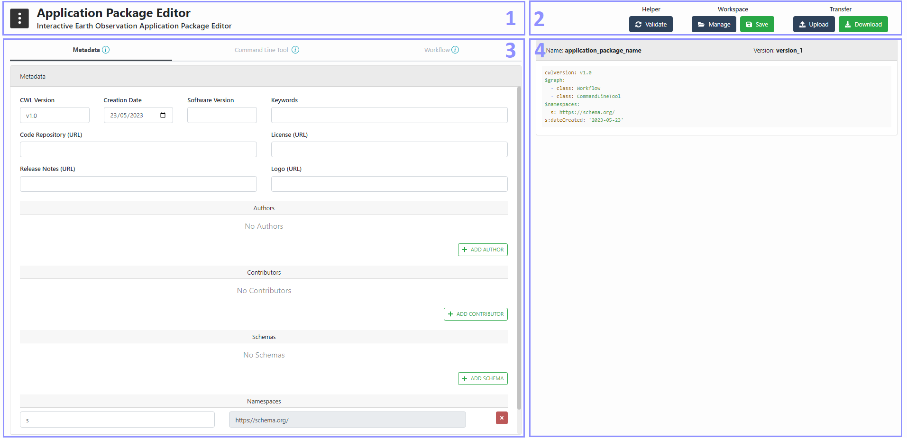
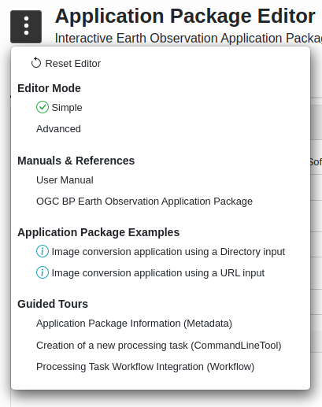
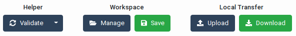
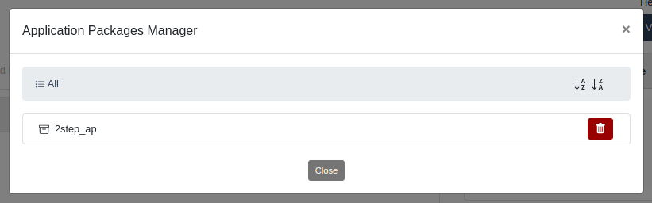
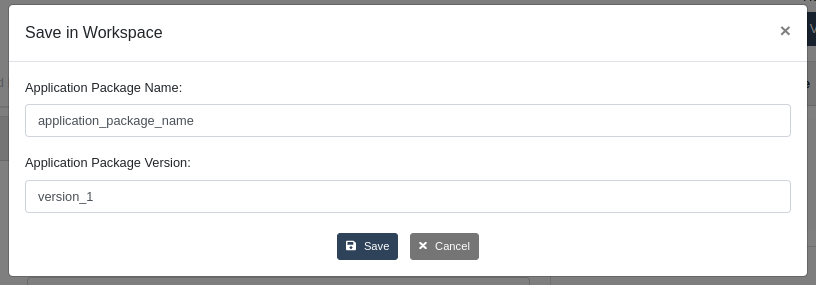
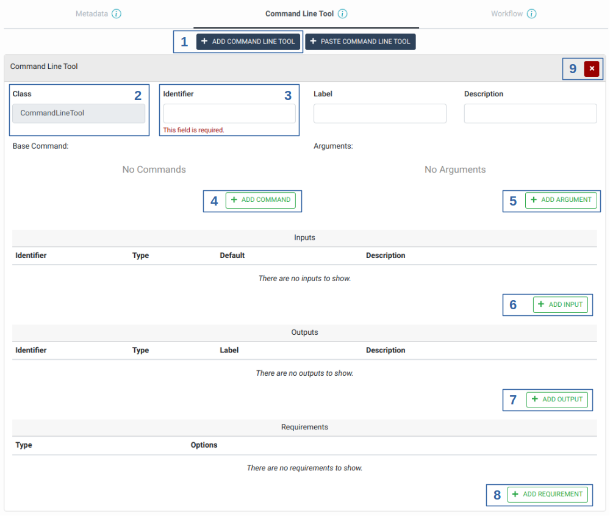
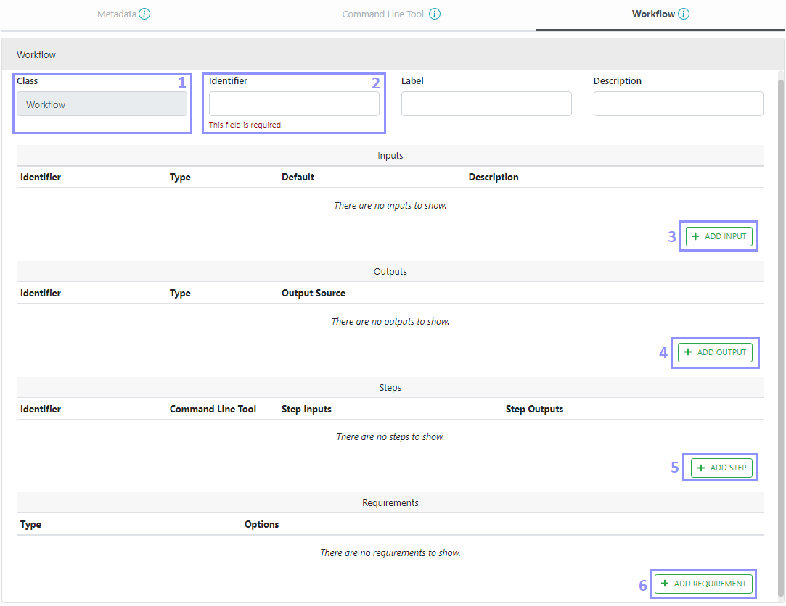
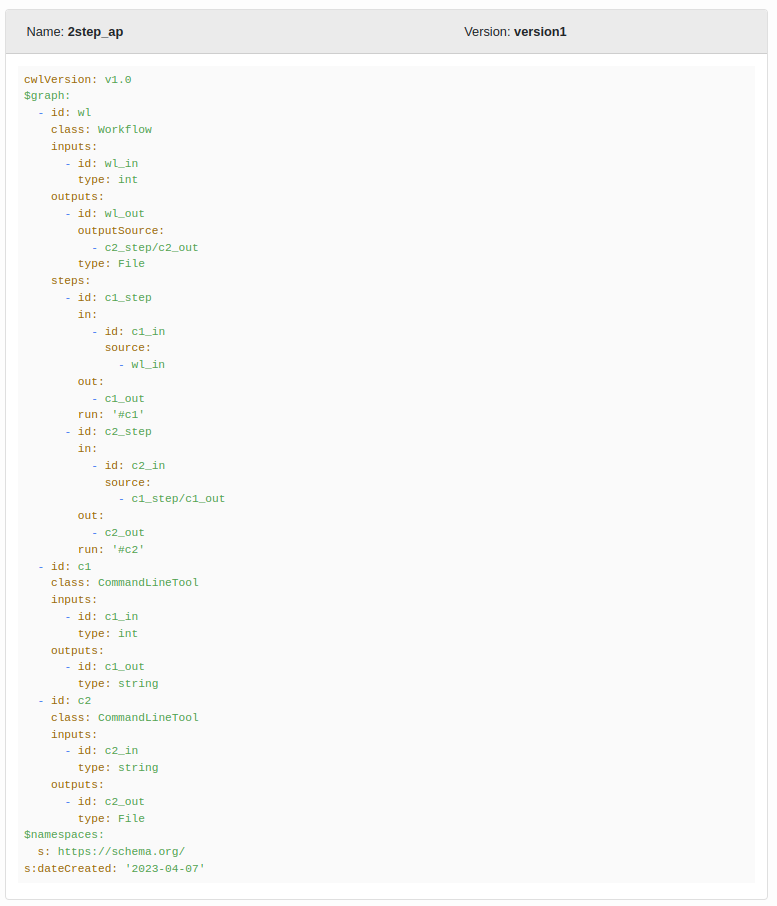

User Manual
Abstract
This document is the EO Application Package Editor User Guide. Its purpose is to describe the features and the capabilities supported by the Application Package Editor in order to make it easy to get started with it.
| Organisation | Name | Contact |
|---|---|---|
| SpaceApps | Bernard Valentin | bernard.valentin@spaceapplications.com |
| SpaceApps | Mounir Hafif | mounir.hafif@spaceapplications.com |
| SpaceApps | Jannes Lathouwers | jannes.lathouwers@spaceapplications.com |
Online version
An online version of this documentation is available at https://spaceapplications.github.io/eoepca-ap-editor/
Abbreviations and Acronyms
| Abbreviations / Acronyms | Definition |
|---|---|
| EO | Earth Observation |
| AP | Application Package |
| CWL | Common Workflow Language |
| GUI | Graphical User Interface |
| ESA | European Space Agency |
| BP | Best Practice |
| OGC | Open Geospatial Consortium |
Introduction
This document describes the features and capabilities implemented in the EO Application Package Editor.
General Concepts
The Application Package Editor is an online web based tool for creating EO Application Packages in an interactive manner. The tool allows to create an Application Package and edit its three main parts as defined in the OGC Best Practice for Earth Observation Application Package which are:
- Metadata: Additional metadata which provides a minimal amount of information about the Application Package to encourage correct citation.
- Command Line Tool (also called Processing Task): An executable, non-interactive program that reads some inputs, performs a computation, and terminates after producing some outputs.
- Workflow: a process characterized by multiple subprocess steps, where a step is a CommandLineTool and its outputs can be connected to the inputs of downstream steps to form a directed acyclic graph. A workflow may have inputs and produce outputs from the execution of all of its subprocess steps.
The tool uses a form based interface which is divided according to the three main parts of an Application Package. These forms allow users to:
- Enter Metadata for the Application Package by defining the software version, the authors and contributors, etc.
- Add Command Line Tool with their required information such as the executable command, its inputs and outputs with their types as well as specific requirements that must be met in order to execute the process.
- Define the Workflow inputs and outputs with their types as well as the subprocess steps to be executed with the mapping of their inputs and outputs.
The tool generates an Application Package that can be stored and versioned in the backend or downloaded as a CWL file. You can also select a stored Application Package version or upload a previously generated one which will automatically fill the editor with the Application Package content allowing further edition of the latter.
Application Package Creation Guidelines
In general, creating a consistent new Application Package can be achieved by following these steps in the editor:
- Define all of the processing tasks (Command Line Tool) that will be executed in the workflow. A processing task is considered complete when its identifier is defined as well as the command to be executed with all of its needed inputs, outputs and arguments.
- Define the inputs of the workflow process. Once it is done, the steps of the workflow can be added which will use the previously defined processing tasks with a mapping for their inputs. Finally, define the outputs of the workflow by mapping them to the outputs of one or more of its steps.
The metadata of the Application Package can be defined at any moment since the information that is set in it is not used by the Command Line Tool or Workflow parts.
Application Package Editor
Interface Overview
The Application Package Editor Tool interface is divided in 4 distinct sections with their own purpose as shown in the Editor GUI Overview figure:
- Header section: This section includes a Help Menu that provides users with multiple useful links and features such as guided tours or Application Package examples.
- File Management Section: This section provides users with a set of buttons that allows users to validate and manage the CWL file generated by the editor. Users here can choose from where to open or save an Application Package (CWL file) as well as edit the name of it and its version.
- Editor Section: This section is the main part of the editor tool which is responsible for the interactive edition of the Application Package Editor.
- Viewer Section: This section is a runtime viewer of the Application Package generated CWL file that will be saved when using the File Management Section.

Editor GUI Overview
Header Section
The header section provides a helper menu from which users can change general settings of the Application Package Editor or open documentation, examples and guided tours on how to use the interactive Application Package Editor. The helper menu provide the following actions as can be seen in the Helper Menu figure:
- Reset Editor: Reset the editor to a default state without any Application Package loaded. The user is asked to confirm this action as it may lead to unsaved changes if an Application Package was already being edited.
- Editor Mode Selector: Allow users to choose between Simple and Advanced mode of the editor. In Advanced mode, the forms of the editor show additional fields which are normally hidden in Simple mode as they are not required. Simple mode is the default one as it makes the interface look simpler and less complex.
- Manuals & References: Allow users to access useful documentation about the Application Package Editor such as the User Manuals and OGC Best Practice for building an EO Application Package.
- Applications Package Examples: Allow users to open Application Packages Examples directly in the Editor. Users can use these examples as a starting template and save them after edition.
- Guided Tours: Provide users with a set of interactive guided tours that describe and introduce the three main parts of the editor: Metadata, Command Line Tool and Workflow.

Helper Menu
File Management Section
The file management section provides users with a set of actions to perform on the Application Package CWL file that is generated/edited by the editor. The possible actions are shown in the File Management Action figure.

File Management Action
Helper Action
The validate button allows users at any moment during the edition of their Application Package to check that the generated CWL file is valid. Note that this validation is also done every time the users open a new Application Package and a list of validation problems will be shown to the user as an error notification.
Workspace Actions
The Workspace Actions are directly responsible for managing and saving the Application Packages of the user in its workspace. Two actions are available:
- Manage: The Manage button opens a manager that allows users to explore and manage the Application Packages saved in their workspace. Users have the possibility to navigate between Application Packages and see the different versions of an Application Package. This manager also provides version specific actions that allow the user to open, lock, unlock, delete and download an Application Package version.

Application Package Manager
Application Package Versions Manager
- Save: The save button opens a save popup that allows the users to save the Application Package Generated CWL file in the Workspace. In this popup, users can change the Application Package Name and the Version name before performing the save.

Application Package Save Popup
Local Transfer Actions
The Local Transfer Actions allow users to manage the Application Packages that are stored in their local storage. Two actions are available:
- Upload: The upload button allows users to directly load an Application Package (CWL file) from their local storage in order to edit it using the Application Package Editor Tool.
- Download: The download button allows users to download any Application Package that is currently open in the Application Package Editor Tool.
Combining Actions
The Workspace and Local Transfer actions can be used together which mean that a user can open an Application Package from its local storage but then, after edition, choose to save it directly in its Workspace and vice versa.
Editor Section
The Editor Section is the main section of the Application Package Editor Tool and consists of three parts named Metadata, Command Line Tool and Workflow as shown in the next figure. More information about these tabs are available by clicking the information icons next to the tab name.
Metadata
The Metadata tab of the editor section allows users to enter/edit metadata information about the Application Package such as the CWL version, the creation date, the software version. etc. Some of these metadata are defined in the OGC Best Practice for Earth Observation Application Package.
As can be seen in the Editor Metadata Tab figure, users can add authors and contributors for this Application Package as well as the schema and namespace that are used in it.
Editor Metadata Tab
Command Line Tool
The Command Line Tool tab of the editor section allows users to add multiple processing tasks with the definition of their executable name, inputs, outputs and requirements that must be met in order to execute the processing task. Initially, a new Application Package has no processing task defined but users can add as many as needed. From this tab, users, as shown in the Editor Command Line Tool Tab figure, can:
- Add a Command Line Tool (processing task) to the Application Package.
- Define the class of the process, this value is always set to CommandLineTool in the case of Command Line Tool.
- An identifier for this processing task, this identifier is unique and allows users to refer to the added processing task in the workflow steps.
- Specifies the program to execute. If defined as an array, the first element of the array is the command to execute, and subsequent elements are mandatory command line arguments.
- Command line bindings which are not directly associated with input parameters.
- Add the different inputs of the processing task with their id, type, default value and input bindings. etc.
- Add the different outputs of the processing task with their id, type, and output bindings.
- Add the different requirements that must be met in order to execute the processing task, for example, "DockerRequirement" can be set if a docker image is used in this processing task.
- Remove any Command Line Tool (processing task) that is not useful anymore to the Application Package.

Editor Command Line Tool Tab
Workflow
The Workflow tab of the editor section allows users to define the inputs, outputs and subprocess steps of the workflow. For each step that is added to the Workflow, the processing task as well as the mapping for its inputs and outputs must be defined by the user. From this tab, users, as shown in the Editor Workflow Tab figure, can:
- Define the class of the process, this value is always set to Workflow in the case of a Workflow process.
- An identifier for this process, this identifier is unique.
- Add the different inputs of the workflow process with their id, type and default value.
- Add the different outputs of the workflow process with their id, type, and output source. The output source is the output of one of its steps.
- Add the different steps of the workflow process with the processing task (Command Line Tool) that should be executed and a mapping for its inputs. Inputs of a processing task are either the inputs defined at the Workflow level or the outputs of another step (processing task) if their types match.
- Add the different requirements that must be met in order to execute the workflow process.

Editor Workflow Tab
Viewer Section
The Viewer Section is focused on showing the corresponding Application Package CWL file that is being generated so that users can have a preview of the result before downloading or saving it. This view of the generated CWL is updated after every action of the user on the editor. Note that the name of the Application Package as well as its version are shown at the top of this section, see the CWL Viewer figure.

CWL Viewer
Glossary
In this section you will find the definition of the main concepts used in the EO Application Package Editor.
| Term | Description |
|---|---|
| Earth Observation Applications | Application that typically offer functions that perform data operations like processing / reprocessing, projection, visualization or analysis. The applications can be written in a variety of coding languages (e.g. Python, R, Java, C++, C#, shell scripts) and make use of specific software libraries (e.g. SNAP, GDAL, Orfeo Toolbox). |
| Application Package | The Application Package is a document that describes the data processing application by providing information about the parameters, software item, executable, dependencies and metadata. This file document ensures that the application is fully portable among all supporting processing scenarios and supports automatic deployment in a Machine-To-Machine scenario. |
| Common Workflow Language | The CWL is a set of open standards for describing analysis workflows and tools in a way that makes them portable and scalable across a variety of software and hardware environments, from workstations to cluster, cloud, and high-performance computing (HPC) environments. |
| Command Line Tool | An executable, non-interactive program that reads some inputs, performs a computation, and terminates after producing some outputs. |
| Workflow | A process characterized by multiple subprocess steps, where a step is a Command Line Tool and its outputs can be connected to the inputs of downstream steps to form a directed acyclic graph. |